作者：创世魂
● 概述
本组件主要用于显示指定目录下的所有文件。
● 目录(写)
帮助文档如下图：
通过本属性可以设置当前要显示的目录，默认为空。
注意：调试版状态下会显示当前火山项目文件夹目录。
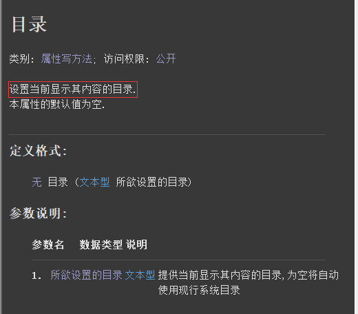
代码编写如下图：
按钮点击后设置当前“文件框1”的目录为“编辑框1”的内容。
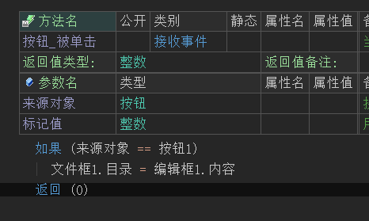
运行效果如下图：
最终按钮点击后目录被切换。
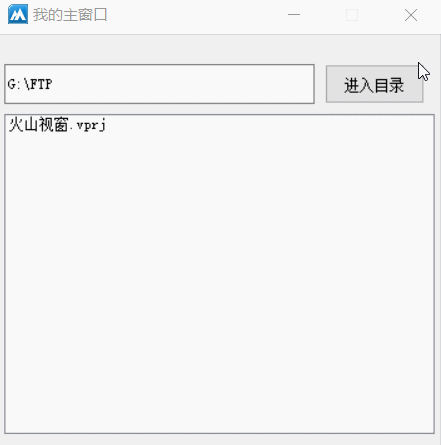
● 文本颜色(写)
通以上两个属性分别用于修改文件框的文本颜色和背景颜色，可使用十六进制颜色值或者“颜色类”中的常量值。
代码编写如下图：
按钮点击后分别设置这两个属性值。
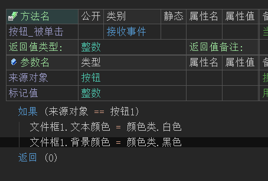
运行效果如下图：
最终可看到文件框的颜色被修改。
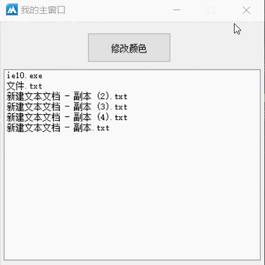
● 通配符(写)
帮助文档如下图：
通过本属性可以进行文件类型筛选。
例如：提供“*.txt”后将只会显示txt后缀的文件，非txt后缀文件不会显示。
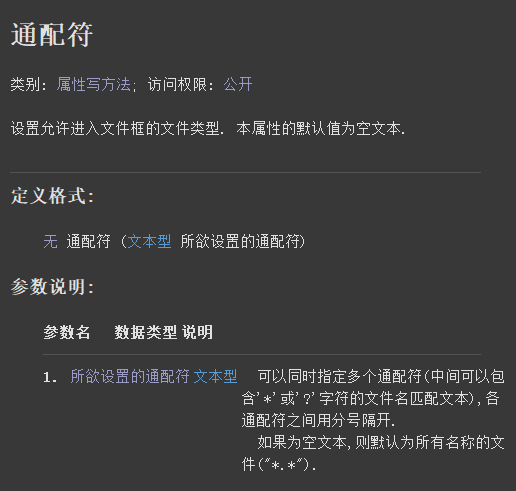
代码编写如下图：
按钮点击后设置本属性置为“*.exe”，用来筛选只显示exe后缀文件。
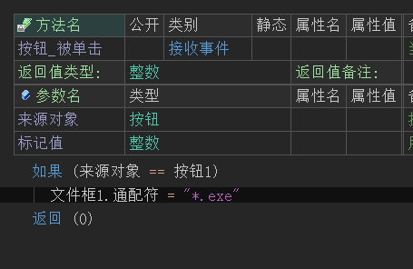
运行效果如下图：
最终可以看到文件框内只剩下exe后缀文件。
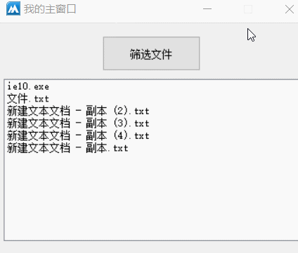
● 允许选择多项(写)
帮助文档如下图：
通过本属性可以让文件框组件支持多项选择，默认为假不支持多选。
注意：本属性仅支持在属性表格中设置。
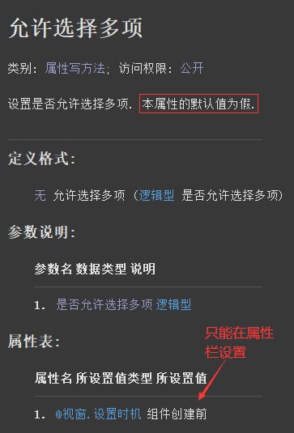
代码编写如下图：
1、首先设置一个目录。
2、然后设置本属性值为真。
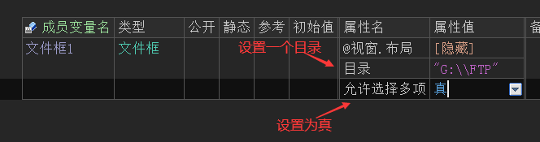
运行效果如下图：
最后可以看到文件框可以进行多选操作。
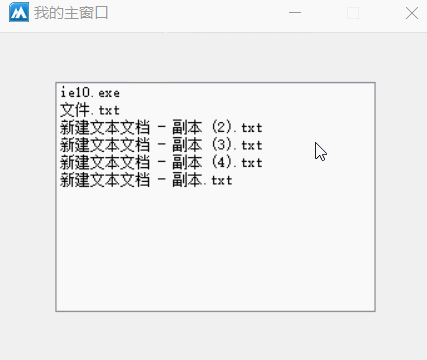
● 被选择文件(读)
帮助文档如下图：
通过本属性可以读取当前文件框被选择的文件，如果选择了多个文件则会用分号进行分隔开。
需要注意的是，本属性取出的文件名是不带路径的。
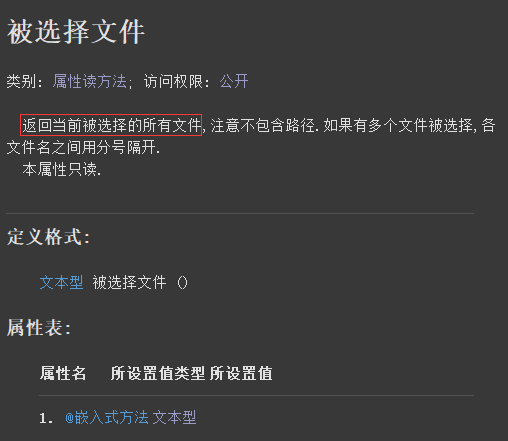
代码编写如下图：
1、按钮点击后首先利用“分割文本()”方法分割被选择的文件。
2、分割后利用“计次循环”取出所有被选中文件名并带上当前目录添加到编辑框中。
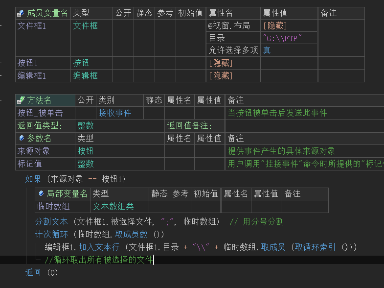
运行效果如下图：
最终被选中的文件会附带路径出现在编辑框中。
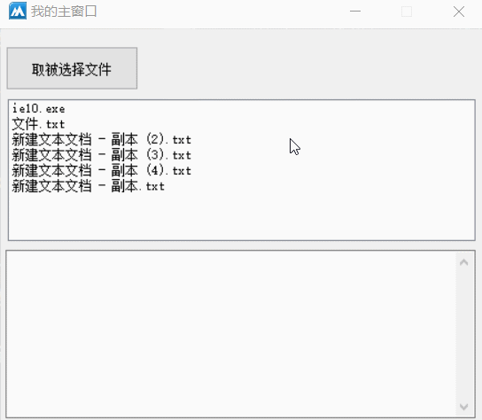
● 双击选择(事件)
帮助文档如下图：
当文件框文件被双击后触发本事件，如果想要获取被双击的文件名称可通过“被选择文件”属性获取。
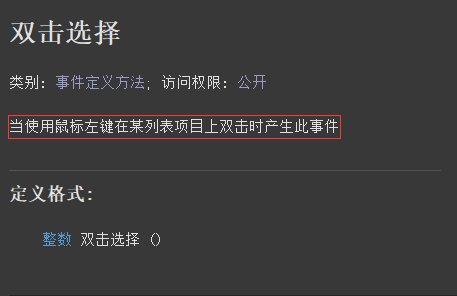
代码编写如下图：
添加本事件后取出被双击的文件。
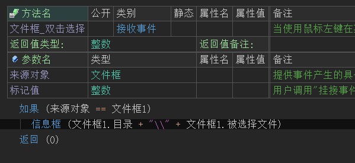
运行效果如下图：
最终可看到被双击的文件显示在了信息框中。
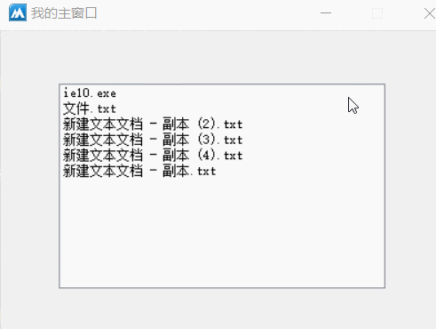
● 选择文件被改变(事件)
帮助文档如下图：
当文件框的文件被选择的时候会触发本事件。
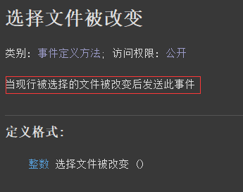
代码编写如下图：
1、首先添加当前事件。
2、判断来源对象后清空编辑框内容。
3、最后分割文本取出所有被选择的文件。
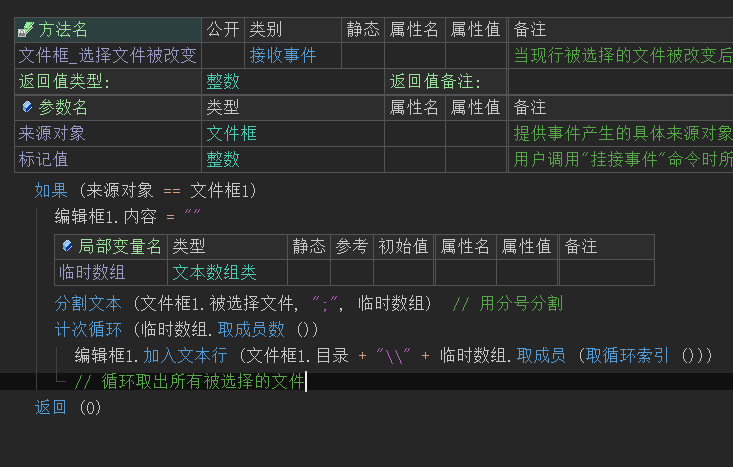
运行效果如下图：
最终可以看到当文件被选择时，被选择的文件会实时出现在编辑框中。
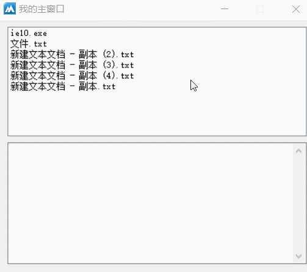